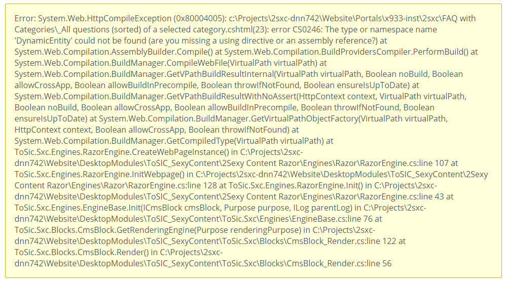

Error: The type or namespace name 'DynamicEntity' could not be found
If you see an error like this:
Error: System.Web.HttpCompileException (0x80004005): ...: error CS0246: The type or namespace name 'DynamicEntity' could not be found (are you missing a using directive or an assembly reference?)
It usually means that you have code using DynamicEntity which had to be moved to another namespace for consistency. We're sorry about the breaking change.
From what we see it mainly affects the very old FAQ app which had some very old coding style in it for LINQ. In this case it was not possible to clean 2sxc and still ensure that this works, because of type-casting restrictions in C# related to covariance and contravariance.
Background: DynamicEntity was moved
To create the public documentation we had to make sure our API was consistent, and IEntity was one of the exceptions. Before 2sxc 10.20 it was in the namespace ToSic.SexyContent. We standardized it now to ToSic.Sxc.Data so the full name is ToSic.Sxc.Data.DynamicEntity.
Quick Fix: Change the namespace
Your code probably has a @using ToSic.SexyContent. You should change this to
@using ToSic.Sxc.Data;
And everything should work. But please also check the good fix below:
Good Fix: Change to <dynamic>
Razor code shouldn't actually need to know the type of this dynamic entity. So it's better to replace occurances of DynamicEntity with the appropriate dynamic. For example, replace List<DynamicEntity> with IEnumerable<dynamic> (note that List<dynamic> won't work because of covariance restrictions).
In the example of the FAQ app, it's recommended you change line 23
<li class="sc-element faq-set" data-tags="@String.Join(",", ((List<DynamicEntity>)q.Categories).Select(a => AsDynamic(a).EntityId))">
to
<li class="sc-element faq-set"
data-tags="@String.Join(",",
(q.Categories as IEnumerable<dynamic>)
.Select(a => AsDynamic(a).EntityId))">
To better understand this, best consult the LINQ Tutorials
Full Error Example
A full error can look like this:
Error: System.Web.HttpCompileException (0x80004005): ...\Portals\...\2sxc\FAQ with Categories\_All questions (sorted) of a selected category.cshtml(23): error CS0246: The type or namespace name 'DynamicEntity' could not be found (are you missing a using directive or an assembly reference?) at System.Web.Compilation.AssemblyBuilder.Compile() at System.Web.Compilation.BuildProvidersCompiler.PerformBuild() at System.Web.Compilation.BuildManager.CompileWebFile(VirtualPath virtualPath) at System.Web.Compilation.BuildManager.GetVPathBuildResultInternal(VirtualPath virtualPath, Boolean noBuild, Boolean allowCrossApp, Boolean allowBuildInPrecompile, Boolean throwIfNotFound, Boolean ensureIsUpToDate) at System.Web.Compilation.BuildManager.GetVPathBuildResultWithNoAssert(HttpContext context, VirtualPath virtualPath, Boolean noBuild, Boolean allowCrossApp, Boolean allowBuildInPrecompile, Boolean throwIfNotFound, Boolean ensureIsUpToDate) at System.Web.Compilation.BuildManager.GetVirtualPathObjectFactory(VirtualPath virtualPath, HttpContext context, Boolean allowCrossApp, Boolean throwIfNotFound) at System.Web.Compilation.BuildManager.GetCompiledType(VirtualPath virtualPath) at ToSic.Sxc.Engines.RazorEngine.CreateWebPageInstance() in C:\Projects\2sxc-dnn742\Website\DesktopModules\ToSIC_SexyContent\2Sexy Content Razor\Engines\Razor\RazorEngine.cs:line 107 at ToSic.Sxc.Engines.RazorEngine.InitWebpage() in C:\Projects\2sxc-dnn742\Website\DesktopModules\ToSIC_SexyContent\2Sexy Content Razor\Engines\Razor\RazorEngine.cs:line 128 at ToSic.Sxc.Engines.RazorEngine.Init() in C:\Projects\2sxc-dnn742\Website\DesktopModules\ToSIC_SexyContent\2Sexy Content Razor\Engines\Razor\RazorEngine.cs:line 43 at ToSic.Sxc.Engines.EngineBase.Init(ICmsBlock cmsBlock, Purpose purpose, ILog parentLog) in C:\Projects\2sxc-dnn742\Website\DesktopModules\ToSIC_SexyContent\ToSic.Sxc\Engines\EngineBase.cs:line 76 at ToSic.Sxc.Blocks.CmsBlock.GetRenderingEngine(Purpose renderingPurpose) in C:\Projects\2sxc-dnn742\Website\DesktopModules\ToSIC_SexyContent\ToSic.Sxc\Blocks\CmsBlock_Render.cs:line 122 at ToSic.Sxc.Blocks.CmsBlock.Render() in C:\Projects\2sxc-dnn742\Website\DesktopModules\ToSIC_SexyContent\ToSic.Sxc\Blocks\CmsBlock_Render.cs:line 56
Here's a print-screen:
Shortlink: https://go.2sxc.org/ErrDynamicEntity